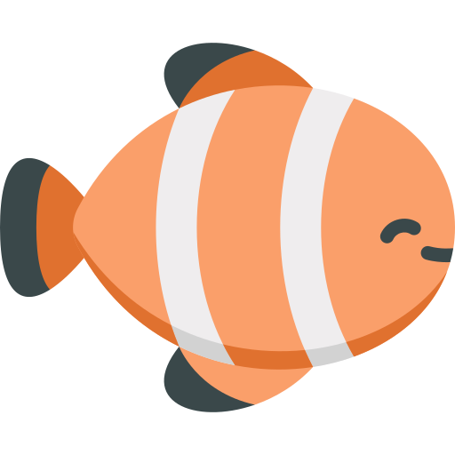
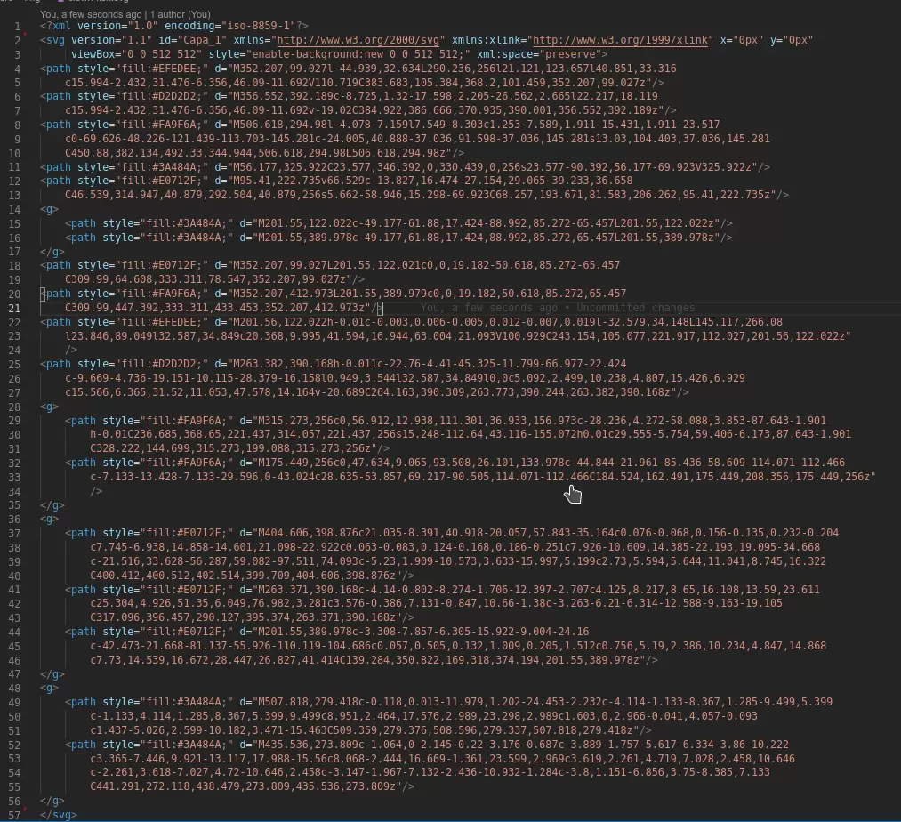

Rozdział ósmy
Przejścia
transition: name duration timing-function delay
https://developer.mozilla.org/en-US/docs/Web/CSS/transition
will-change: name - używamy tylko wtedy gdy mamy problem z wydajnością. Nie używamy bez potrzeby, staramy się nie używać tego rozwiązania.
https://developer.mozilla.org/en-US/docs/Web/CSS/will-changeNie animujemy właściwości position top, right, bottom, left. Do zmian stanu, pozycji elementu używamy transform.
transform:rotate()
transform:scale()
transform:translate()
https://developer.mozilla.org/en-US/docs/Web/CSS/transform
Animacje
animation: @keyframes duration | timing-function | delay | iteration-count | direction | fill-mode | play-state | name - wykorzystanie animacji
animation: backgroundChange 3s ease-in 1s infinite reverse both
running;
Definiowanie animacji:
@keyframes backgroundChange {
from {
background: red;
}
to {
background: green;
}
}
@keyframes backgroundChange {
0% {
background: red;
}
50% {
background: green;
}
100% {
background: blue;
}
}
SVG - Scalable vector graphics (grafika wektorowa)
SVG - uniwersalny format dwuwymiarowej grafiki wektorowej który możemy stylować, animować za pomocą CSS.
Kod grafiki:
Head & OpenGraph
Open Graph jest protokołem, który pozwala dodać rozszerzony opis strony poprzez znaczniki meta, wykorzystywany przez media społecznościowe.
Przy OG korzystamy z pełnych adresów do zasobów.
<!-- Informacja o kodowaniu strony. -->
<meta charset="UTF-8" />
<!-- Informacja o wielkości viewportu na urządzeniach mobilnych. -->
<meta name="viewport" content="width=device-width, initial-scale=1.0" />
<!-- Dotyczy kompatybilności z przeglądarkami Microsoftu. -->
<meta http-equiv="X-UA-Compatible" content="ie=edge" />
<!-- Tytuł strony. -->
<title>Site title</title>
<!-- Opis strony. -->
<meta name="description" content="Description" />
<!-- Tytuł, Title -->
<meta property="og:title" content="" />
<!-- Opis, OPTIONAL description. 2-4 sentences. -->
<meta property="og:description" content="" />
<!-- Pełny adres strony, full url with http(s) ie. https://andrzej-jablonski-project.github.io/Notatnik-frontendu -->
<meta property="og:url" content="" />
<!-- Obrazek strony, full url to the image with http(s) ie. https://andrzej-jablonski-project.github.io/Notatnik-frontendu/img/fb.png. Facebook suggests at least 1200 x 630. -->
<meta property="og:image" content="https://andrzej-jablonski-project.github.io/Notatnik-frontendu/img/cover.png" />
<!-- Ikona strony. -->
<link rel="icon" type="image/png" href="assets/pwa/icons/icon-192x192.png">
http://ogp.me/
https://developers.facebook.com/tools/debug/
WCAG
WAI - Web Accessibility Initiative jest organizacją zajmującą się wytycznymi dotyczących tworzenia dostępnych serwisów internetowych.
Porady
- Pisz semantycznie.
- Trzymaj kontrast.
- Odpowiednio dobieraj kolory.
- Unikaj autoplay
- Nie ograniczaj rzeczy czasowo.
- Nie usuwaj ':focus'.
- Używaj alt i kończ opisy kropką.
- Używaj ARIA (głównie przy aplikacjach)
PWA
PWA (Progressive Web Apps) - Technologia pozwalająca naśladować stronie www tradycyjną aplikację. Potrafi działać w trybie offline.
manifest.json - plik konfiguracyjny PWA
Service Worker - mechanizm pozwalający na korzystanie z aplikacji webowej w trybie offline.
https://app-manifest.firebaseapp.com/ https://developer.mozilla.org/en-US/docs/Web/API/Service_Worker_API